Links die Website, wie sie heute ist. Rechts der Prototyp. Zu jedem Paar ein Satz, welches Problem gelöst wird.
Vorher-Bilder: sportfreunde04.de am 11.09.2026, Fotos mit Kindern unkenntlich gemacht. Nachher-Bilder: Prototyp, Stand Montag, 14. September 2026.
Startseite am Rechner
Vorher
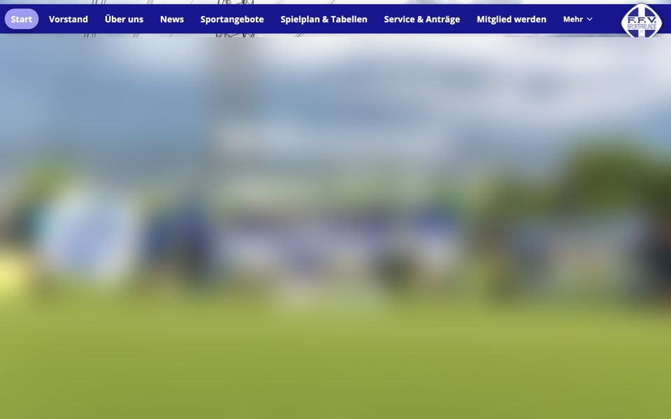
Nachher
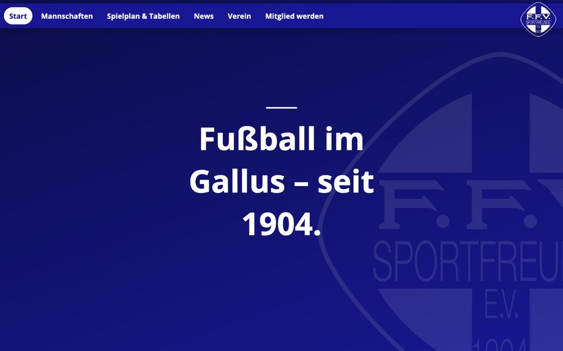
Vorher füllt ein Foto den Bildschirm und beantwortet keine Frage; nachher stehen Wappen, Claim, Probetraining und die nächsten Spiele auf dem ersten Bildschirm.
Startseite am Handy
Vorher
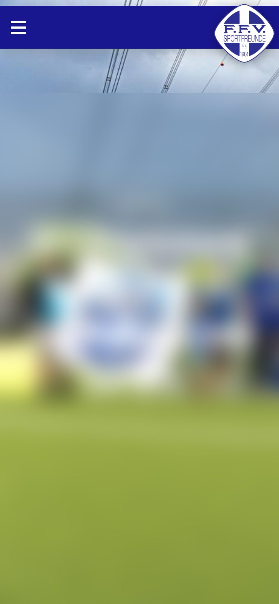
Nachher
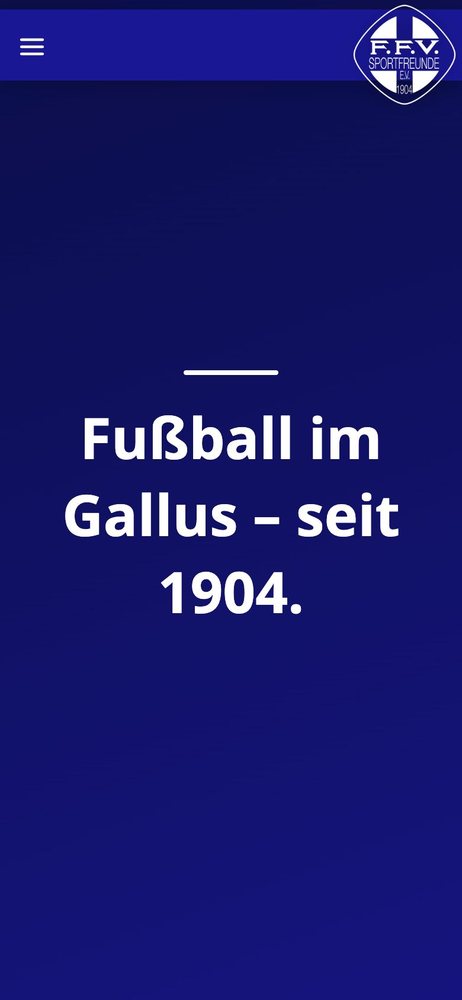
Vorher ist der erste Bildschirm ein Bild ohne Text; nachher sieht man sofort, wer der Verein ist und was man tun kann.
Menü am Handy
Vorher
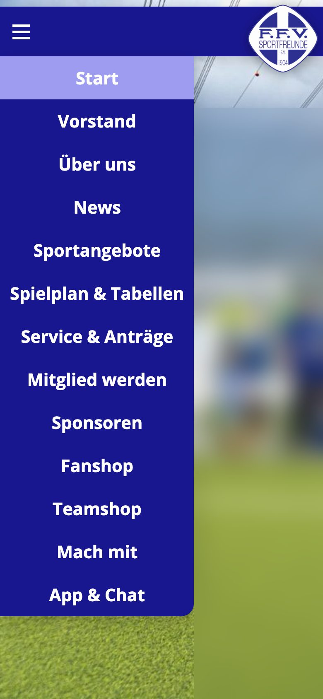
Nachher
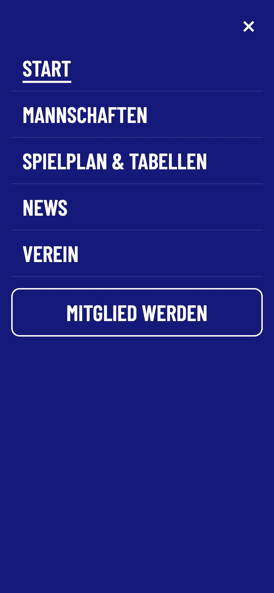
Vorher 13 gleichrangige Punkte mit Doppelungen, der Hintergrund blitzt durch; nachher sechs Punkte, vollflächig, mit Schließen-Kreuz und Tastaturbedienung.
Inhaltsrahmen am Rechner
Vorher
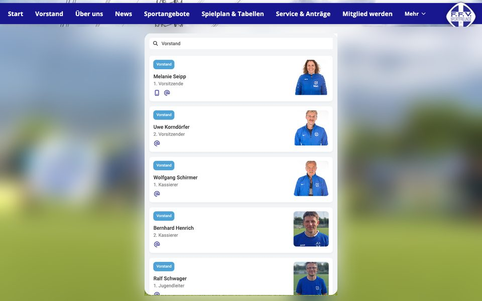
Nachher
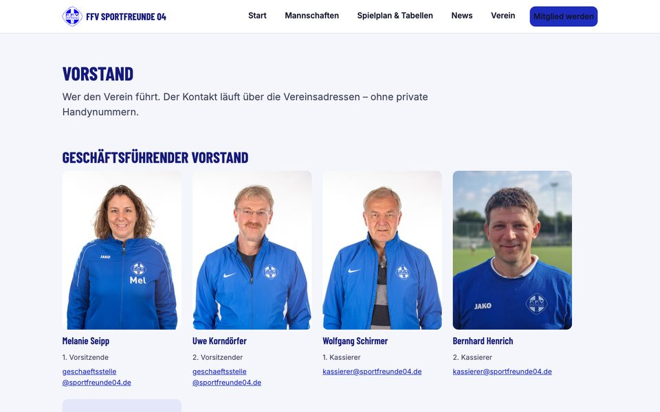
Vorher läuft der Inhalt durch ein 592 Pixel breites Guckloch mit zwei Scrollbalken; nachher nutzt er die Seitenbreite mit einem Scrollbalken.
Mannschaftsseite am Handy
Vorher
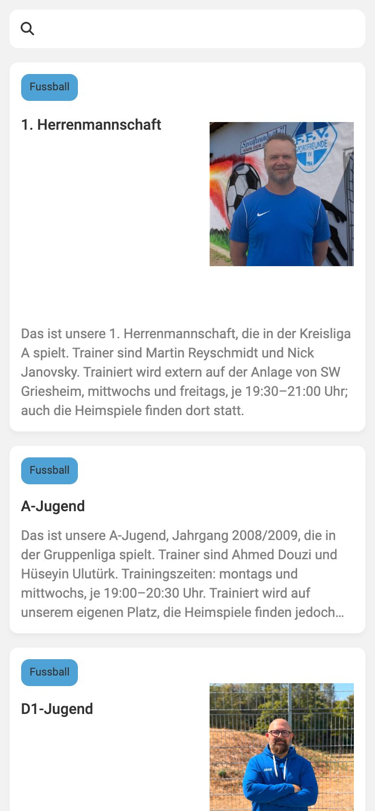
Nachher
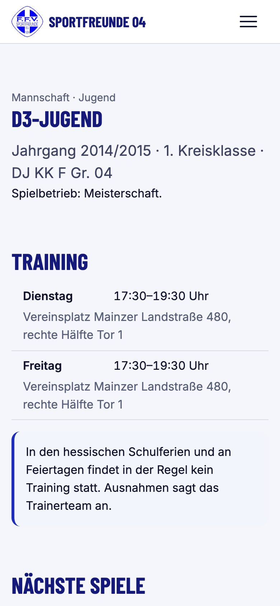
Vorher fehlen Wochentag, Uhrzeit und Platz, Kontakt läuft über 26 × 17 Pixel kleine Symbole; nachher stehen Training, nächste Spiele und die Vereinsmail auf einer eigenen Seite je Mannschaft.
Sponsoren am Handy
Vorher
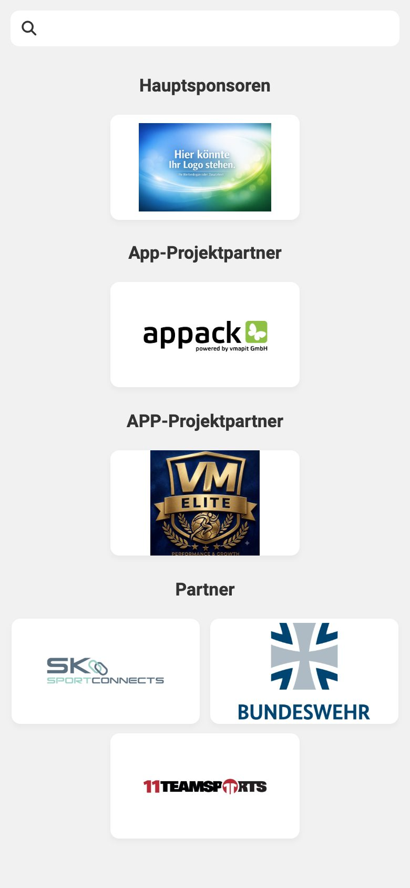
Nachher
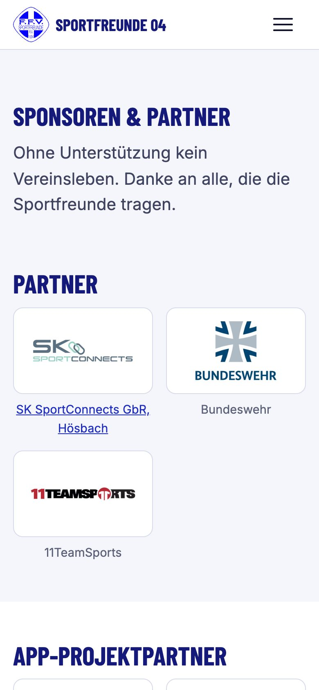
Vorher zeigt die oberste Kategorie einen Platzhalter und eine Kategorie gibt es doppelt; nachher zwei Kategorien und ein Satz, wie man Sponsor wird.
Mitglied werden am Handy
Vorher
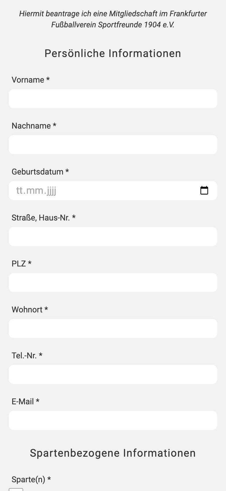
Nachher
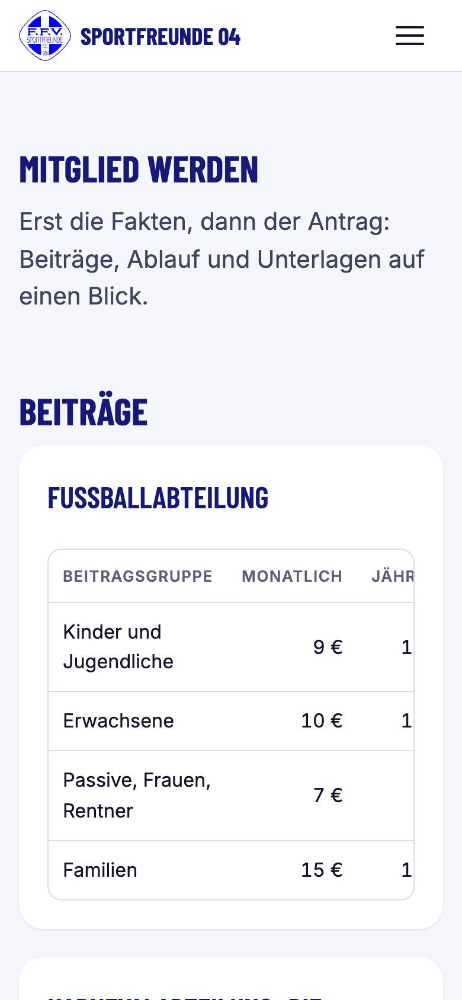
Vorher beginnt die Seite mit dem Formular und nennt keine Beiträge; nachher stehen Beiträge, Ablauf und Unterlagen vor dem Antrag.
Service & Anträge am Handy
Vorher
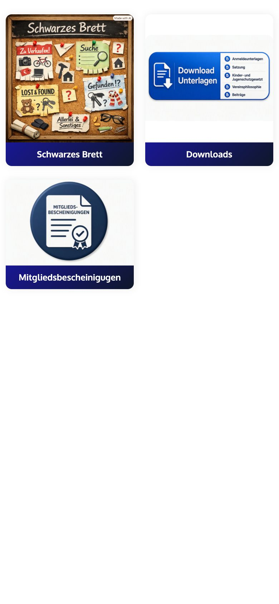
Nachher
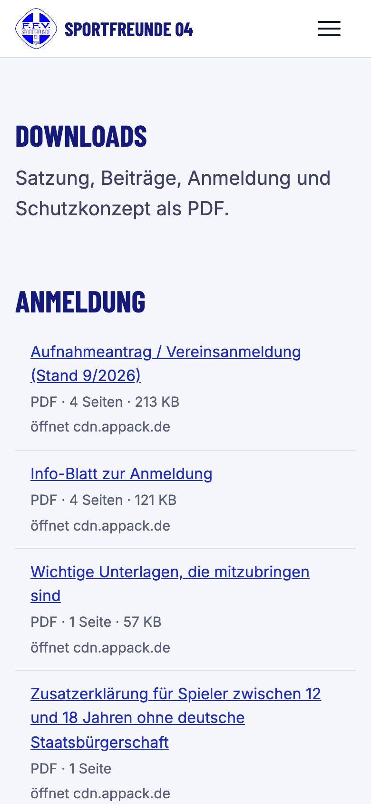
Vorher drei unterschiedlich gestaltete Kacheln, ein KI-Bild mit Wasserzeichen und ein Tippfehler; nachher eine Downloadliste mit Dateigröße und Seitenzahl.
Sportangebote am Rechner
Vorher
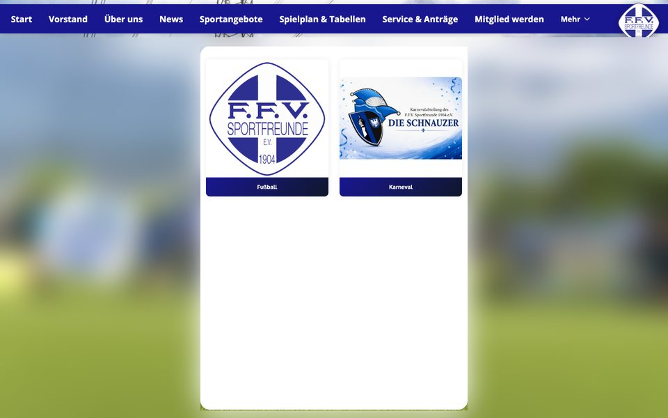
Nachher
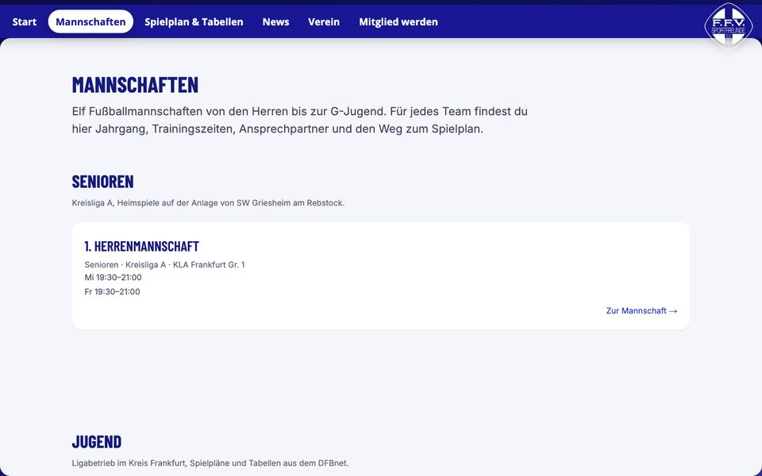
Vorher zwei Kacheln und darunter rund 450 Pixel Leere; nachher elf Mannschaften in drei Gruppen mit Trainingszeiten.
Messbar
Merkmal
Vorher (Prüfung 04.09.2026)
Nachher (Prototyp)
Menüpunkte
12
6
Adressen
1 für alle Seiten
47 eigene Adressen
Inhaltsrahmen
fest 592 × 834 px
volle Breite, 320–1920 px
Scrollbalken
2
1
Tippziele
26 × 17 px
mindestens 44 × 44 px
Überschriftenstruktur
keine h1
genau eine h1 je Seite
Sprachangabe
fehlt
lang=de
Alternativtexte
alle leer
alle Bilder beschrieben
Startbild
296 KB, WhatsApp-Export
kein Bild über 200 KB, sprechende Namen
Private Telefonlinks
19
0
Trainingszeiten auf Mannschaftsseiten
keine
alle elf Mannschaften
Vorher-Werte aus der Qualitätsprüfung vom 04.09.2026, Nachher-Werte aus der automatischen Prüfung des Prototyps (npm run pruefen).
Was der Prototyp nicht zeigen kann
Zwei Punkte lassen sich nur mit dem Anbieter appack/vmapit lösen: eigene Adressen unter sportfreunde04.de und ein Inhaltsrahmen, der mit dem Inhalt wächst. Beides steht im Übernahmepaket.